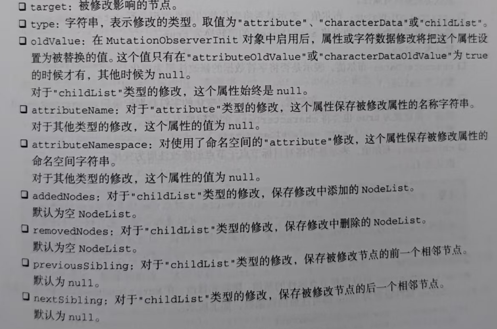

每次执行回调，回调都会收到一个MutationRecord 实例的数组。每个实例包含发生了什么变化 , 以及影响 DOM 哪一部分的信息。 因为在回调执行前可能发生多个修改，所以每次调用回调都会传人一个 MutationRecord 实例的数组。他跟Intersectionobserver 是一样都是差不多的 都是存储元素变化的实例和前后数据
对应一个属性修改的 MutationRecord 数组如下所示:
[
{
addedNodes: NodeList[],
attributeName: "foo",
attributeNamespace: null,
nextSibling: null,
oldValue: null,
previousSibling: null,
removedNodes: NodeList[],
target: div#observation,
type: "attributes",
}
]
下面是与命名空间相关的修改:
let Observer = new MutationObserver((mutationRecords) => console.log(mutationRecords))
observer.observe(document.getElementById('test'), { attributes: true })
document.body.setAttributeNS('baz', 'foo', 'bar')
// [
// {
// addedNodes: NodeList[],
// attributeName: "foo",
// attributeNamespace: "baz",
// nextSibling: null,
// oldValue: null,
// previousSibling: null,
// removedNodes: NodeList[],
// target: div#test,
// type: "attributes",
// }
// ]
连续修改将生成多个 MutationRecord 实例，随后执行回调将按人队顺序接收到所有待处理的实例:
document.getElementById('test').className = 'foo'
document.getElementById('test').className = 'bar'
document.getElementById('test').className = 'baz'
// [MutationRecord, MutationRecord, MutationRecord]
MutationRecord 实例有如下属性。

回调雨数的第二个参数是检测到修改的Matationobserver实例:
target：发生变动的 DOM 节点。
type：变动的类型。可以是：
"attribute"（属性变更）
"characterData"（文本内容变更）
"childList"（子节点变更，如增删）
oldValue：
对于 attribute 或 characterData 类型的变动，返回被替换的旧值。
如果未在观察配置中启用 attributeOldValue 或 characterDataOldValue，则为 null。
对于 childList 类型的变动，始终为 null。
attributeName：
对于 attribute 类型的变动，返回被修改的属性名称（如 "class"、"id"）。
其他类型变动下为 null。
attributeNamespace：
如果变动的属性使用了命名空间（如 XML 中），返回其命名空间 URI。
其他情况为 null。
addedNodes：
对于 childList 类型的变动，返回新增的子节点列表（NodeList）。
默认是一个空的 NodeList。
removedNodes：
对于 childList 类型的变动，返回被删除的子节点列表（NodeList）。
默认是一个空的 NodeList。
previousSibling：
对于 childList 类型的变动，返回被变动节点的前一个兄弟节点（没有则为 null）。
nextSibling：
对于 childList 类型的变动，返回被变动节点的后一个兄弟节点（没有则为 null）。